Summary
This lecture chunk begins with a recap quiz on logarithmic power and voltage units, including dB, dBm, negative dB values, and the correct way to add logarithmic power quantities by converting to linear scale first. It then reviews course structure and the communication-system topic map, which follows a message through sampling, quantization, line coding, modulation, channel transmission, decoding, error detection, and signal reconstruction. The lecture revisits orthogonal bases, Fourier series, Fourier transforms, and the use of sine and cosine functions as basis functions for representing time-domain signals in the frequency domain. It explains harmonic decomposition of a square wave, including why even harmonics cancel while odd harmonics contribute. The lecture introduces sampling as the conversion of analog signals into digital data and motivates it through storage, computer processing, noise robustness, error correction, and time division multiplexing. It then develops ideal sampling mathematically as multiplication by a train of delta functions and shows that this produces repeated copies of the original spectrum in frequency. Finally, it explains the Nyquist criterion, under-sampling, spectral overlap, and ideal low-pass reconstruction of the original signal.
Knowledge tree
- Decibel Power Ratios (Page 1)
- dBm Reference Power (Page 1, Page 2)
- Voltage Ratios in Decibels (Page 1)
- Adding dBm Values (Page 2)
- Communication System Course Map (Page 3)
- Orthogonal Bases for Signal Representation (Page 3, Page 4)
- Fourier Domain Representation (Page 4)
- Cosine and Sine Frequency Representations (Page 4, Page 9)
- Square Wave Harmonic Decomposition (Page 4, Page 5)
- Fourier Transform of a Constant Signal (Page 5)
- Motivations for Sampling and Digital Communication (Page 5, Page 6)
- Digital Communication and Noise Robustness (Page 6)
- Time Decoupling in Digital Communication (Page 6, Page 7)
- Nyquist Criterion (Page 8)
- Ideal Sampling as Multiplication by a Delta Train (Page 8, Page 9)
- Time-Frequency Multiplication and Convolution Duality (Page 9)
- Spectral Replication from Sampling (Page 9, Page 10)
- Under-Sampling and Spectral Overlap (Page 8, Page 10)
- Ideal Low-Pass Reconstruction (Page 10)
Source material
Page 1
We will spend the first five minutes, give you time to solve the DB entry-level quiz because we want to look at the statistics to give you better feedback at the recap. So open your laptops, phones, whatever works for you. Log into Canvas and spend the next minutes doing the quiz and we’ll let also people who woke up a bit early to make their way into the classroom. Yes, this one, yes. Just smile and wave. All right, go.
All right, good morning. Again, so thanks for joining this quiz. We saw that we have now 100 responses and that’s a threshold where we say, okay, that’s good and let’s start because it could be roughly the number of students that we have in the room. And maybe a few also joined online. That’s also why we wrote it on the board.
I don’t know if you remember, so Oded in the last meeting or in the last lecture explained that we always start with a quick recap and today we also start with that quick quiz, which I think we will try to do every time. So we will always have this little quiz at the beginning. It still encourages you to be here in time, so don’t use it as an excuse. I can walk in later, but we can of course understand it’s sometimes difficult.
And what we do now is we go through the quiz together and then we can see and compare how you actually answered and how it worked.
So the first question that you were supposed to answer or that you got as a question is:
If the power of a signal is doubled, what does it mean? Did the power increase by 10 dB or by 3 dB or by 2 dB or by 1 dB?
When I look at the answers, I see that 81% of you got that right. Just one question, did you saw if you scored correctly or not? You didn’t saw if you scored correctly, okay, good to know. Who feels confident enough to tell me what is the correct answer? Yes, it’s 3 dB. So if the power is doubled or the signal strength is doubled, that means that you have an increase of 3 dB. So thanks for that.
And then the next question, let me see, I have too many screens here. Question two. And look at the statistics as well. Also that statistics went quite well.
So the question was:
What power corresponds to 0 dBm? So you have now the power given in a logarithmic scale. And then the question is, what does it mean in a linear scale?
And then the possibility answers are 10 milliwatt, 0 watt, 1 watt and 1 milliwatt. Who feels comfortable in answering me on that one? Yes, exactly, it’s 1 milliwatt. And I’m happy that 87% of the students got that right.
And the next question that we had, what had you had, is the voltage ratio. So you have a ratio of two to one. And what does it approximately corresponds to? Again, here the trick is as well, it’s the voltage and not a power any longer that we’re talking about. And we mentioned it the last time. And we saw also in the responses that there’s a slight difference in accuracy. So in the first two questions you scored with nearly 90% here at 70%. So some might have made a mistake here, but now that I point out that it’s voltage, who feels comfortable in giving the proper correct answer? Or any answer, I’m also fine with guessing, yes. Six decibels, 60 dB, indeed. Based on the fact that we have now a field instead of a power, so a voltage. Doubling corresponds always, yeah, corresponds to a 60 dB.
And then we had:
What does it mean when two power levels differ by zero dB?
And then the answer options are they are equal. One is twice as large as the other one. One of them has no power. The comparison is invalid.
Here we get the highest score. So I’m happy to just ask around who would like to give me the proper answer or the correct answer. Yes? They’re equal, indeed. I’m just repeating the answers as well so that if anybody is looking at the live stream afterwards because that’s the only opportunity for you to get the right answers listening to how we go through them.
I’ve released the answers now. You already released them already. I released them. Save the misery. Okay. I still hope you stay with me.
The next question was:
Which statement about negative dB values is correct? They mean the quantity is smaller than the reference. They are impossible. They always mean zero power. They mean the quantity is larger than the reference.
And also here we have quite a nice response. 91% of the students or few answered correctly, at least due to the statistics that I see now. So I’m happy to ask who would like to. Chances are good that you had it correct. Yes. Yes, indeed. So the mean of the quantity is smaller than the reference. And what it also mentions is that you always end up kind of in a fraction. So 0.1 milliwatt or whatever. And the reference in that case would be, I mean, it’s dB. So it’s a fraction of what you had started with.
All right. And then the last question. This
Page 2
is actually multiple answer options. So it’s not only one correct answer, but two correct answers. Therefore the statistics is also giving another complete picture.
So you see here what happens if you calculate zero dBm plus zero dBm. What does it accumulate to? And we have someone who is, yes, we have someone who would like to. Yeah, and how did you calculate that? I just, I need to repeat it because otherwise not everybody’s hearing.
So what you did is you took the zero dBm and converted it to milliwatt. So you took into linear scale. So zero dBm is one milliwatt. And then you add them. So you have two times this. So it’s in total two milliwatts. So that’s one answer. Yes, exactly.
So you have then either you see a media, oh, that means I double. So it was before it was one milliwatt and I doubled it to two milliwatts. So you can make the conclusion, oh, it doubled. So it’s three dBm. However, the doubling itself would be expressed in a ratio, so three dB. But you can also just convert the milliwatt back to a logarithmic scale. And then you get indeed a three dBm.
Yeah, one thing we want to, that’s why the question is showing. You see that next to the answer here, there are squares. And the other questions had circles. This will repeat itself also in the midterm and the final exam. There will be questions which are single answer and there will be multiple answer. Look carefully at the questions because we saw that a lot of students got the one answer right, because it’s three dBm and two milliwatts, it doesn’t matter. And they were happy with that or didn’t think there’s more answers possible. But when it’s a square, there are two answers, potentially two answers possible. It could be three, it could be four. Could be all of them are squared, of course. It’s an extreme case. But so this will repeat itself in the course that there will be sometimes multiple answer instead of a single answer.
This camera’s also subtracting points if you get the wrong answer. It gives partial points for us. This answer probably, if people only gave one of the two answers, they will get half of points at the full point. Because that is a hint for the midterm. So if you have multiple choice questions and there are multiple answers possible, we will subtract points for your own answers. Then we also subtract points for our own answers. So I’m not certain of it. Just because otherwise you will just take all the boxes and get the perfect mark, it’s not the intention.
All right. Going to the second part. Nope. Ah, there we go. We have no clicker here. So three parts or four parts all the way. A simple quiz at the beginning, a recap of the last lecture. Then we have the lecture of today and then we have the instruction sessions which we use creatively. And we are also free to not use all the instructions hours that we have. So it’s always planned for two hours, but we don’t know if we use them. And as also was mentioned last time, it might happen, it might regularly happen, that the lecture is actually extending into the instruction. So that we need a bit more time there.
So what I’m doing now is like a few recap of what we did in the first lecture and a lot of things that we said in the first lecture was general information. So we told you that we have multiple sources of information that you can consume. Unfortunately, and I would like to announce that now, there has been quite some hiccups with the Canvas page. So I’m really sorry for that. These slides will be online later on. Well, they are already online, but I think it’s the wrong Discord channel in the slides that are online. This is the correct one. So this is this year’s Discord channel.
However, we thought we fixed most of the Canvas issues, but I just heard from multiple students that there’s still some content things not accessible. I’m really sorry for that. I will do after the lecture look into that or after the instruction actually. Look into that and we’ll today enable everything that isn’t necessary for this week. And then later this week, so tomorrow and then the weekend, I will check for the next weeks. So then please be shocked if something is not already visible for next week, but I will try to make it accessible as soon as possible.
One of the content that you can also use for studying is the reader. So of course you have the lecture, but you have also the reader. The reader is quite, it’s complete in itself, but there’s also a lot of information that is going beyond the content that you need for the exam. We often give, for example, a mathematical background on how is that actually, where is it actually coming from? What’s the calculation? In most cases, that’s not why. In nearly no case, it’s necessary.
For the exam, we want to test that you understand the content of the course. We don’t
Page 3
want to test that you can learn everything. So it’s not by repetition of formulas. You’re not getting any scores for formulas in the exam. We actually give you a formula sheet of, I think, four pages. These you can use, so you don’t have to study them by heart, but you should be able to use them. So that’s what it is all about.
This course we already mentioned, lecture already mentioned, and then we have the three lab sessions. These happen in multiple weeks. You can see them in the module overview, which weeks are actually used for the lab sessions. There will be always two sessions. You only have to attend one of the two, and you even don’t have to attend them at all. You can also do them from home, but we really advise you to join them because within these sessions, you actually get support by TAs, and if you’re at home, you have limited support. So we will try to answer a few questions in Discord, but the chances are high that at home, you’re on your own, while within the session itself, you get the support.
All right. I also put down the different topics that were done on the lecture last time. So we had a slide that we had. Okay, that’s what we’re going through today. General course and selection using course feedback. We also mentioned, or you had the opportunity to fill in the course survey from Els for the last quarter. The topic map, we will show that again in a second. We talked about the autogonal base, time frequency duality, free series, free transform DB and DBM.
All right, that’s going into the topic itself. So this is the course map. This is the extended version. What I mean with extended is you can see here the labels for the different topics. So you see in sampling this in letters written B and C that are the modules. So within the modules, you can find these letters back. So there’s reference between all the different topics that are presented here. And the end, what we are discussing, what all the content of the course is presented within that one slide. So it’s giving you an idea, okay, what do we actually cover?
And we cover the transmission of a message towards a receiver at the end. So you have the outside. Can I actually use my mouse? Yes. Do you see that? Yes. So you have a message at the beginning and at the end, you want to have that message received somewhere. And what you do is you go through the different steps. You have sampling. You do quantization. You use a line code. So that’s the way we will get to the details later. Then you can use different modulation formats and then you use a physical channel, which could be a transmission via wireless communication. You could use optical communication to the host of your fiber, a coax cable, all these kinds of things.
We talk a bit about channel properties. So what does the channel actually do with your signal? What will happen? How could it be influenced? Could it be disturbed? And so on and so forth. And then at the end, you receive the signal and then you decode the signal. And with that, we also will talk about error detection or that mention already, it’s a really powerful tool that is used in more or less all communication. So that’s definitely an important part of this course. And then you have a signal reconstruction before you can actually transmit it again.
You see that, so it’s also kind of structured alphabetically or chronologically, B and C. That’s what we will cover, covered already in the first and we’ll cover today. So these two topics will be in the lecture today.
All right, yes. Then just one recap on one of the topics or actually it covers all of the rest altogether. We talked about the orthogonal system. So what that was presenting he drew the three dimensional space. So you have a dot on the three dimensional space and you have the fundamental vectors that you can use for representing that point in the three dimensional space. And therefore you have an orthogonal base and it has a definition. So that means that each of these fundamental vectors, where’s my mouse again? Okay, somehow I’m not here. So if you use the product of the transverse or of two of these sort of transverse and another base vector and you use the product of these and it needs to follow these conditions. It needs to be K if these vectors are not the same and it needs to be zero if they are in all other cases. So that defines the base vectors.
And why is that so important? You can also do that with functions. So you can do that and then you have a similar definition. And what that actually means or what we are using it for is that we express a lot of our functions and that was also what that was presenting. And I just tried to bring it back to you. You had a signal which was just squares after each other sent
Page 4
In the time domain. So that’s in time and it’s just an amplitude as X is always important. I’m kind of focusing on that. I will also focus in grading on that. I always want to have X labeled, sorry, already mentioning that. So these are expressed in the time domain and what you can do is you can also express in a frequency domain and one of the ways of visualizing that is if you use a set of other base vectors.
So in this case, you use sine or cosine functions. You are able to express these by defining their ratio within this signal. So if you would draw a function and then you calculate for this function, what is the part that it is represented in the initial signal. Then you go for a higher base frequency. And now I’m able to draw that. Yeah, not the best drawing skills. And based on these different components, each of them has a representation in the frequency domain.
So in the frequencies, you have also an amplitude, which is the coefficient actually, and the frequency. And the first one that you used has a certain base frequency, ω_0 for example. And then you know, okay, this is the component that is representing that first to represent the initial signal in the time domain and your first, second, which might be present or might not be present at all. So that depends a bit on if it is.
And when you want to actually practice that yourself or exercise that yourself, we created a mini map for that. And you can also find it in the modules where you actually do exactly this. So you have a square signal and what you do is you use the calculation or the formula that was also given last time for all the components, Cₙ. It’s an integral about the different base frequencies that you can use to reconstruct the square signal.
And within this, you can actually check yourself if you are able to recreate it. And what you get then is the different frequency components that are actually representing, or that you are using to represent, the same signal. So you get exactly the same signal but expressed in a different domain. So use a different set of base functions to represent the same signal. And that’s what we do, that we will do a lot.
And going back and forth between these two, that is what we do with the Fourier transform. So you do a Fourier transform to go from the time domain to the frequency domain or you can also go by inverse Fourier domain from the frequency domain to the time domain. That is mainly the takeaway. And at the end we also discussed dB and dBm, but that we already recapped today with the small quiz.
Just one thing, because it will be important: the frequency representation of a cosine and the sine we also discussed. And what I would like to know, or not to know, but I would like to mention it. So for cosine, you have the base frequency that is given on both sides, or that expresses that. So you showed the Euler function and then you showed what does it actually mean if you look at the cosine frequency domain. But I think we missed drawing this graph.
And for sine, you have one down, so you have one negative and one positive. And this is rather important to remember. So that’s one of the only things that I ask you to remember. Of course you can also calculate based on the formulas, but just that you take it with you and you will also need it later on in the exam that we will discuss today. So today, we have an exam question and this will be important to know. So that’s the reason why already I spotted it here.
All right, thanks. Thank you, thanks a lot Mark.
Cleaning or? Maybe I just, the reader shows an example of exactly this decomposition of a square wave into… Hi, Andrew. And it shows why, for example, the second harmonic and the fourth harmonic are not present in the solution. And it’s important because we talked about what does it mean to have orthogonal.
It’s off now. Yes, wait. I can check if I find it in the reader. So the reader tries to help you understand this by showing that, and Mark did a very good job drawing the third harmonic. Well done. It’s not so easy.
What you see here is the idea of this calculation, as you actually ask yourself: when you would multiply this function, this square wave, with this sine function, you have to solve the integral of cos(ω_0t) times, in this case, one. So this will be the total period, so this will be T, T/2. You integrate from zero to T, or from -T/2 to +T/2, it doesn’t really matter, times the value of the function. In this case it’s one, or A, dt.
And the value of this is positive. It has actually a value, it’s actually this area. So there’s a positive contribution with this. But if you take the next function, which is a harmonic, which does this, you see that the
Page 5
positive part is canceled out by the negative part. So this second harmonic does not contribute to the total waveform. And this is true for all the even harmonics. So the fourth harmonic, we have the same behavior. While the other harmonics all have contributions, the first one has the biggest contribution, but as you go on with harmonics, you’ll see that the third harmonic will have part of it, like Mark drew very well. I ran out of colors, very disappointing, they only have two colors in this room. Okay, it doesn’t matter, green. So this is Mark’s amazing drawing.
So this one and this one are canceling out, but this part still contributes. So the third harmonic actually does contribute. And you can do the… but it’s of course smaller than the original one, so that’s how it goes.
One last question about Fourier. We talked about the Fourier system of Euler function, the exponential, which ended up being a delta function with the frequency displacement. You remember that was done Tuesday. And a simple question will be: what is the Fourier transform of the constant A?
Yes, a delta function, at which frequency? Yes, at zero. So this is nothing more, nothing less than A. If the frequency is zero, then it’s also an Euler function, but with ω_0 = 0. And then you’re left with a constant. And we will come back to this a lot in this course, when we talk about line codes, about their spectral behavior. We say, yeah, there’s a DC component, so we expect to see a delta at zero. This will be part of our language in the following weeks. So I wanted to reflect on this.
And the logic behind this is very simple. If the only thing we have in our signal is constant amplitude from minus V plus V, clearly there’s energy here, obviously. And it’s infinite energy because you constantly have a voltage. So we expect to see something in the spectrum, but there are no changes in time. So this is equivalent to having zero frequency changes, but there’s still a lot of energy. So a constant in time has a delta function. So this in the frequency will be just a delta function at zero. So this is just the last comment I want to make.
Okay, we are ready to start. I hate these clocks in this building. It’s completely off, huh? Like eight minutes ahead of time.
No, no, it’s okay. I have my own watch, but I’m just… No, it’s here on the board. I wrote it down. While you were talking. Okay, so done.
Okay, so we start with an interactive session. I want to ask you a simple question. We will spend today talking in depth about sampling. And my question to you is, why the hell do we need to sample? What’s the added value of sampling? Because we will spend a lot of time today about explaining how complicated it is, but there is a benefit. So I’m wondering if you can tell me what is the benefit of sampling?
Any answer, any thoughts that come into your head? Yes, let’s start.
To go from an analog signal to digital, we need to sample. Yes, and that was something already mentioned last Tuesday. Indeed, of course, if you don’t sample, you don’t have a way of getting information. Okay, but why? Clearly, that’s a way to move analog signal. Why do we want to move? Maybe why we want to move to digital? Maybe the different question.
Okay, so the answer is, if you go digital, it’s easier to transmit. We will talk about this in details in this entire course. Maybe we can come back to the end of the course to realize if it’s easier. Remember, the origin of transmission, early 20th century, only analog. There was nothing digital about it. But okay, Morse code was digital, if you want. Telegraph was digital, huh, if you think about it.
Yes, please. Like the minimum information needed to be free. It’s done with you digital. Yes, by sampling, you can transmit the minimum information needed to recreate it. Yes, so if you sample information, you sample it correctly, which is important, and then don’t just sample randomly. Then you use the least amount of information needed to send information. Okay, because if you send the whole waveform, you can use more information. Okay, okay, thank you.
Yes, more. Yes, please. Okay, that’s an interesting one. If we don’t sample, it’s only understanding. If I send the analog wave, yes. Interesting, it could be. I mean, of course, you need to tell the receiving end what you’re doing, right? It doesn’t matter if it’s analog or digital. I mean, nowadays, radio is also digital, but it used to be a time the radio was analog. And the only thing the radio needed to do: what frequency I need to tune into to listen to that radio channel. So I’m not sure, but okay, thank you.
More, yes, please. We need to process the information on the signal. We need to process the information, and it’s easier to do it on the
Page 6
digital, I mean. Yeah, computers are digital, right? Computers are digital. Okay, that’s a good one. So we have dramatically changed how we live by putting computers everywhere. So if we send analog information, for example, a computer doesn’t know what to do with it, right? So, okay, that’s very good.
What is the benefit of digitizing everything? What do we do with digital information most of the time? Yes. We can store it. We can store it, exactly. It’s very good that we can store it because now your mobile phone, if it’s not connected to the internet, can still play music because you have the MP3 files on your phone, for example. So that’s very, very useful.
Other possible benefits of using digital communication? Yes. We can filter out the noise better. That’s very deep, thank you. Indeed, we’ll talk about the benefits of it. And what is fundamental about digital compared to analog? And I think it’s important to realize, yeah, please. Yeah, I like it, yes, I was going to… thank you.
So, digital is just a combination of bits, right? And that’s how we can store it as a file. And when we send it, and we talk about what happens when we send digital information in this course in detail, whatever you expect to receive as a receiver will be digital bits. If you send an analog wave, maybe common to both the digital world and the analog world, the receiver doesn’t know what is coming. If you knew, there was no need to transmit, right? If you know what you’re gonna receive, there’s no point in transmitting. But the whole story, the whole beauty about communication is that you don’t know what you’re getting.
So, for the analog signal to come in, if, for example, it’s a noisy analog signal, I don’t know what the noise would look like. If there is noise, I don’t know. Maybe the noise is the signal, we don’t know. We just really do not know. In the digital world, we have agreements on how the wave should look like. It should be bits, maybe binary zeros, binary ones. Maybe we have a certain way of coding them. It’s all part of how we do communication. But we know, you have an expectation of something, how it looks like. And if there is noise added to it, which will happen in all systems, there is always noise, there is a better way of dealing with the noise. And that’s very fundamental to this communication.
Very simply drawn, and you immediately see it in the drawing. Only one disadvantage for this room is that we only have one board, so I’ll be able to need to erase it a lot. So, if my signal is analog, and for whatever reason there is noise on the signal, doesn’t matter what frequency noise, when I detect this, I detect the green wave. Nothing to do about it. I don’t know what is noise and what is signal. Maybe somebody sent high frequency oscillation on the… I don’t know.
If I somehow magically convert this analog information signal into a digital sequence of bits, and now I add noise to it, same amount of noise, by the way, doesn’t have to be different. I can tell my receiver, you know what? It could be that there’s gonna be a noisy signal, but the only thing you care about is: is it higher or lower than this line? And if it’s lower than this line, then I say, okay, I have this value, and if it’s higher, it’s this value. This is a very, very, very strong property of digital communication.
And what else we talked about on Tuesday, what else we can do, and if we are very unfortunate, and there’s a dramatic increase in noise here, for example, and we detect this bit wrongly, which can happen, of course. There’s a bit error. There’s a bit error. We can use advanced error detection, error correction algorithms, digital ones, to get back the original data.
So there’s a lot of benefits for data communication, but we pay a price. So somebody said it’s simple. It’s not simpler. It’s really much more complicated. But the benefits outweigh, dramatically outweigh the price we pay in terms of technology, so that’s why really all communication, 95% of it is digital, maybe even more, because it’s so much more efficient to do. There are so many benefits.
The one last thing about digital communication, which is important to mention, I want to mention it, is the fact that when we sample signals, when we convert analog information to the digital domain, we disconnect, and it’s very important to understand. I find it very important, it’s part of the digital age, so it’s really, really important. We disconnect what is the original time-varying experience from the time domain, we disconnect it.
So we say, okay, a song is three and a half minutes. If you sample it, digitize it, it will be three megabits, or 30 megabits, depending on how deep you sample it, how many bits of continuation, we’ll talk about this in details.
Page 7
later.
But now we have a bunch of bits, and I can choose to send these three megabits which represent the song at a bit rate of one megabit per second, or 10 megabits per second, or 100 megabits per second, because you know when you connect your laptop to the Wi-Fi network, you can actually see the speed at which it’s connected, and depending on the network you’re connected, you have better or worse connection and better or worse bit rate on your link.
So now, for example, you can read or download, or whatever you call it, a three and a half minute song in a fraction of a second, for example. And that is fundamental to digital information. You cannot do it with analog. There’s no way to take an analog information and to download it faster than it actually happened. You cannot do this.
And this allows a lot of the things you now take for granted. For example, you, I think you know this, but if you don’t know it, when you talk on your phone with somebody, yeah, it’s not when you were young, maybe you had a walkie talkie, I don’t know, the experience, you had this thing that you can press and you can talk to your friends. It’s a lot of fun. That was analog. There was really a radio channel between you and your friend. That’s why it didn’t work for long distances, of course, otherwise you’ll be messing with the police and it’s not very nice. So it was short distance, and to allow you to talk for somebody maybe 10, 20, 30 meters away, this is purely analog.
So you press the button, you talk, somebody on the other hand hears you, also works very nicely. But this is analog. As long as you are holding the button and talking, something happened.
When you talk now on the phone, if you use the phone ever to talk to somebody or if you talk on any of the messaging apps, not even the audio, by the way, even you just make phone calls, all the same. Your voice is digitized, obviously. So sampled, quantized, convert to bits, and then the time you’re actually talking, during the time you’re talking to somebody, 10% of the time, maybe less, maybe 1% of the time, depending on how loaded the network is, you’re actually sending information.
It’s called time division multiplexing. We will not talk about this in this course. It’s a beautiful course. Next year, Q1 is called telecommunication systems, given by colleagues of mine, which really digs deeper into what does it mean to have mobile networks. And it tells you that when you send information between two mobile users, most of the time, they’re not even connected to each other. It sounds weird.
What we do is we take the voice that you speak, so we take, I don’t know, 100 milliseconds of your voice, we sample it, we compress it to the data it’s actually needed to actually reconstruct it. We talk about all of this in this course. And we take a small time window and we send the data. And at the other end, the data is decrypted so you can get the information and you get the audio in your ear. But most of the time, there is no real communication between you, not like the walkie talkie example.
So this really allows us, for example, to allow all of you at the same time, roughly in this room with this wireless router somewhere, probably here in this room, to the same time listen to music, watch a video, talk to your friends all the time while using the same frequencies, the same radio channel, all of this happening simultaneously because none of you is actually occupying the channel full time. Each one of you is using it partially.
That’s because we have sampled the information, we have allowed the time that it took to generate the information and the time it used to send the information to be completely different time. So it could be three orders of magnitude shorter, 10, five, depending on how efficient your communication channel, you can really squeeze time in that way and it allows you to reuse the information.
Now it’s time for your break. After the break, we will explain sampling in more detail. All right. Yes. Let’s continue. Oh no, no. There’s still one minute. This clock is really fucking me over.
Stream and they take the live stream as recording, so I hope. Yes, it’s more than like last. Yeah. All right, we can get started again. Please take your seats.
All right. So we learned now that there’s no live streaming on Thursday morning. We’ll try to fix it. Maybe we don’t, because there’s enough room for you here, so. And then you show up, otherwise you’ll be in bed watching us. She’s also okay, I think, but we’d like having people around, right? We appreciate having an audience.
Okay, sampling is important. We spent the last minutes before on what the impact is of being able to sample. Okay, so we want to sample. So, simple question.
Page 8
If I want to sample a signal, I’m gonna sample it. I’ll get the samples. And the first question is, how close do I need to put these sampling points?
Yes. We said sampling frequency needs to be at least twice the highest frequency of the wave. Thank you. So this is something you’ve learned. It’s called the Nyquist criteria, right? If you want to sample a signal, you need to sample at least twice the frequency of the signal.
So this signal, let’s assume for the sake of the discussion that the highest frequency in this wave is 100 hertz. So somewhere, if I’ll do a Fourier transform, because this is a not periodic signal, if I do Fourier transform of the signal and I look at the spectrum I get, I will see that spectrum, there’s a spectrum for this. So if I draw A(f), this is the A(f) is the Fourier transform of this. I will see something. And here, this is 100 hertz. It ends. There’s nothing more. Okay, that’s the spectrum of A(t). It’s called A(f) and it has a finite spectrum.
So there is a somewhere, a wave at 100 hertz, which is included in this. It needs to be represented. It’s part of the signal, this is 100 hertz, so this will be 10 milliseconds.
So what does it mean sampling at? So let’s assume I sample, do another sample of this. If I sample once every period, for example, like this and this, that’s what I do. You have to remember that at the receiver, the only thing I have, the only information I get at the receiver is of course only the things that I’ve sampled.
Somebody said about using the minimum information needed to actually send the information, and send the signal. So if I only send the green points here to the receiver, and this goes to the entire transmission system and it doesn’t matter what happens, and the receiver, this is transmitted, sampled signal in green, and then the receiver after transmission, after transmission, only get these two points. The transmitter needs to connect the dots. That’s what it needs to do.
And if I only send these two dots, it’s very improbable that the receiver will decide, ah, these two dots, okay, there’s this in between. There’s no reason. A very logical assumption will be that this is actually the information sent. It’s called linear interpolation.
If we send double the amount of points, if we add to the green dots, also the blue dots, I drew it wrong. That’s roughly, okay. If we add the blue dots here, I add this and this, then there is a larger probability that at least I’ll be able to do this. And of course this is not a sine wave, but approximate sine wave better.
So, and you can think about this, in a minute we’ll explain why it happens, but if I do anything which is below the combination of green and blue, if I decide to do within a cycle, this is a full cycle, this is a full cycle, the signal, instead of having two dots in the cycle, I’ll do one and a half dots.
So I, for example, take extreme case, if I do, I’m really running into calls quickly, if I do this sampling and this sampling, for example, so I don’t have two, I have three samples over two periods, basically, because the next one will be somewhere here, somewhere. So this is two cycles, I have three samples over three cycles. You can see that I can connect the dots differently. This is not the original signal. This is called under sampling and we’ll show in a minute what it does with your signal.
So, something at Nyquist is necessary, and I think we covered this one.
So, in the case of ideal sampling, we take the signal, we sample it, at least at two times the maximum band of the signal, and now we’re gonna write it mathematically. So I leave this here, let me just erase this for a minute. Maybe I need to, remember, use the other part of the board, okay, so the question is what is sampling mathematically?
And sampling mathematically is nothing more, nothing less than taking the original signal a(t). So the sample signal s(t) is the original, multiplied by a sampling function. We call it x(t), x(t) is a sampling function, so x(t), and what the sampling function does is it takes the continuous time representation of a wave, which is this wiggly line, and chooses specific values out of it.
So, we’re gonna have after sampling, the only thing we will have are these values. If I would draw it better, it will be equally distance. My drawing skills are limited, so it doesn’t look like it, but they should be equally distance. So this should be, this distance should be the sampling period, which is one over the sampling frequency, yes?
We write mathematically the sampling function as x(t) is equal to infinite series of delta functions. This is the way we write it, mathematically. Which means that if I combine these two together, I can write s(t) to be equal to an infinite sum of a
Page 9
at these sampling moments, and this is the ideal sample signal.
It has the values, so it has all these values, these are all a and t, so this is a, t_s, and this would be a, 2t_s, and this one would be a, 3t_s, and so forth. These are discrete values. They are, as we decided, fast enough, we sample fast enough, because that means that if there is a sine wave hiding here which has a frequency, maximum frequency of 100 hertz, we sum it at least twice in that period so we can reconstruct a sine function.
This is the time representation. What happens in frequency? Need to make sure it’s not escaping too far, but there is no way of capturing it.
In order to understand what happens in frequency, I need to take s(t) and do Fourier transform. So S(f) is the Fourier transform of s(t). S(f) is, and s(t) is a multiplication of two functions, of a(t), and x(t). If we have multiplication in the time domain, we will have convolution in the frequency domain, okay?
We talked about it before when you said, remember we talked about linear time invariant systems, all right, just a quick reminder. We said if x(t) is the input, and I have a transfer function h(t), and I want to know y(t), then I can say y(t) is x(t) convolution with h(t). We said this is annoying, it’s a difficult integral, so we go to the frequency domain, X(f) goes through H(f), end up at Y(f), and then we said, yeah, a Y(f) is just a multiplication of X(f), and H(f).
Same works the other way around, please, yes, exactly. Exactly, so that’s, so this example, if the time domain is convolution, the frequency domain will be a multiplication. It also works the other way around. If you have multiplication in the time domain, you will have convolution in the frequency domain. It’s just because how you write convolution and integration, what happens when you do Fourier integrals.
So we need to have a convolution between A(f) and X(f), okay? So far, nothing dramatic happened. Now I’m gonna make you believe that I say something which is true, it is true, there’s a question.
What is A(f)? It’s a spectrum of a, yeah, okay. And to be completely accurate, a(t) is a real signal, so the spectrum should be symmetric, and I’ll be a very bad drawing of this. So all spectra in this course are symmetric because we are talking about real signals.
So now we need to do the convolution. In order to do the convolution, A(f) is just a spectrum. I just drew it. I don’t have a closed formula for it, but you can imagine having a closed formula for it because if it’s a single, you can actually do the Fourier integral, then you’ll get a closed formula, analytic formula, it doesn’t matter.
X(f) is the Fourier transform of this infinite series of delta functions. We can try to solve it together. We will spend a better part of two days on this because it’s mathematically very annoying, but I will just give you the answer.
X(f) is an infinite series of delta functions, surprise, surprise, where the distance between delta functions is inverse to the sampling frequency, or actually the sampling, inverse to the sampling period, or actually the sampling frequency. So you can write it like this, or you can write it as delta f minus n times f_s. Yes, both are, of course, identical and correct. This is X(f).
Why is this important? Because now we’re gonna do convolution.
Yes, please. Then down, you do a over t. This here in x? This is a over t. This is X(f). Again, if you note that. These are delta functions in time, and now they’re delta functions in frequency. I don’t have a here. I lost a. This is just x. This is not s, it’s x.
I mean, the amplitude over the time period. This is not time. This is frequency. I’m missing something. Yeah, the frequency domain. Yeah? The height of the delta function.
Oh, the height of the, well, that’s a, okay, that’s a general discussion to be had. There could be a scaling here. I don’t really care for it at the moment. There could be a scaling for the delta functions potentially, but they’re infinite anyway, so a scaling of an infinite variable is not really interesting, but when you do, you go back to the original value, it might have an impact. So again, the math, you can double check it. I don’t worry about it too much.
The important thing is that an infinite series of delta function in time becomes an infinite series of delta function in frequency. But now it’s at a multiplication which we had in the time domain, we have convolution. And now I need to convince you that taking a function, it’s an A(f), and convoluting it with a delta function in the frequency domain, f_0, that the impact of doing convolution with the delta function is to get a at f minus
Page 10
f zero. How best to do it? I don’t know how best to do it. It’s a mathematical fact that when you convolute something with a displaced delta function, you get the function centered around that new frequency. You can look at it from how you integrate this and what does it mean to do the integration. I don’t wanna spend too much time on it. It’s just pure mathematics, but this is an important outcome of this calculation because it means, and that’s important. So I apologize if I skip the math here, but it is the result of convoluting with the delta function, this is the space.
And if you take my word for it for a minute, it means that what we have here is an infinite sum. So this is the spectrum of the sample signal. So the spectrum of the sample signals is an infinite sum of the original spectra of our signal, repeated again and again and again in the spectral domain. Basically we’re occupying, for a better word, the entire spectrum from minus infinity to plus infinity with copies of the original signal.
You can also draw this and for drawing it, I will dramatically simplify the spectrum (A(f)) because it’s difficult to draw these wiggly lines every time. So if (A(f)) spectrum looks something like it and we use triangles a lot because it’s easy. If this is (A(f)), if then the spectrum then (S(f)) will have, this is (S(f)), will have copies. The first copy is very easy to draw because it’s when (N) is zero. So when (N) is zero, I have my first copy. That’s easy.
Where do I draw the second copy? Yeah, so if I keep to my reasoning that 100 hertz is the maximum frequency, so (B) is 100, and if I say I sample it twice (B), then the second copy will emerge here. This will be two (B), no, three (B), sorry. This being two (B) and then there will be another copy here around minus two (B) which has minus three (B) here and so on.
And now it can become much more clearer why sampling below Nyquist is a problem. Because we have put a condition on this that we have to sample. What happens if, for example, let’s draw it again. No, go up. It’s good, exercise this. What happens, what happens if (F_S), for example, is not two times (B) but only one and a half times (B)? Yes. There will be an overlap. There will be an overlap.
Let’s exaggerate it. So this is (A(f)) and the next copy is now not at two (B) but at one and a half (B). So this is the center of it. And it has the same shape, supposed to end up here. And then this region where these two are overlapping, again, what I generate is not multiple lines. I generate the sum of all of these. So I will have this thing. It’s the orange line. This is really (S(f)). (S(f)), for this case, is this orange line.
And what is the problem now? Okay, so I get the orange line. Yes. We lost information. Why did we lose information? Because the next question you want to ask yourself, okay, I sampled the signal, I got this waveform. It’s all nice. I want to actually get the original data. That’s the purpose of sampling. We want to eventually be able to reconstruct the original waveform.
So if I want to reconstruct the original waveform and I have this signal, this is the spectrum of the sample signal. What trick can you suggest I can do in the frequency domain to get back the original signal? This is my signal, sample signal. Any idea how I can look at this and say, okay, I can do something in terms of filtering in the frequency domain to capture the original?
A low-pass filter. That’s a very good idea. If I make a low-pass filter, and allow me to make an ideal low-pass filter, annoy me to the max. I have to get used to these boards. If I use a low-pass filter like this, and somehow miraculously I’m able to take only the copy around zero, just it, and we’ll talk about why it’s not very easy to do, but okay, let’s assume I can make this magical filter, and only capture this.
Then after filtering, so this is the low-pass filter, so I take (S(f)), go to a low-pass filter, which has this response, so this is (H(f)). This is the low-pass filter. What do I get to the output? I get (A(f)), because I only filtered the zero copy, nothing else. And (A(f)) is my original signal.
So simply said, it’s not so easy to do, but simply said, sample signal has a periodic spectrum. Here or here, it’s a periodic spectrum. If I capture the copy here at the center, I get (A(f)), which means, and that’s important, I have a perfect reconstruction of my original signal. And sampling theory is a very, very strong theory, and it suggests that if you do the right things, which means you sample at least at Nyquist frequency, at least, you can do more, at least at Nyquist frequency, then you apply a perfect rectangle filter, and perfect doesn’t exist, but if you can apply a perfect rectangle filter, if you do these two things, you are getting exactly, not maybe, not approximately, you get exactly the original
Page 11
signal. Think about it. Think about it, it’s not trivial. You started with this wiggly waveform. You started with this. You then decided, too much information. Gonna throw, effectively, almost all of the except for specific points. The only thing I’m actually preserving is these green points. So out of the whole complex time phenomenon, I only capture specific moments in time.
I know, by analyzing the signal, that it has a finite spectrum, so I do this capturing in a clever way. I don’t just capture values, I capture the interval, which is at least two times the highest frequency in the signal, but I’m sending, very important, I’m sending digitally, later we talk how we do this, only these values. Nothing else, and yet, at the receiver, the theorem says I will be able to exactly reconstruct the waveform with all its wiggles, okay?
It’s not trivial. Maybe you say, yeah, of course. It’s really not trivial, and it’s beautiful theory, and it says that, and now, why is it true? So I showed you in the spectral domain why it’s true, but that’s very easy, because, of course, if you have infinite copies of the spectrum, I take the zero copy, I have the original signal, but thematically, I’m gonna put a few math on the board.
We can write that (A(t)), so this is reconstructed, so what does it mean to multiply with a square filter? It means, again, we have to go back to the time domain, I want to write (A(t)) that we reconstruct, is meant to do convolution with the Fourier transform of a square wave, which is a sinc function. That said, sinc function will be chasing us again and again and again, so this is what we do in the frequency domain, it means in the time domain that (A(t)), this is the reconstructed, we call it reconstructed signal, is gonna be equal to, somehow, my print got cut in the middle, of course:
[ A(t) = \sum_{N=-\infty}^{\infty} A(NT_S) \frac{\sin\left(\pi F_S\left(t - \frac{N}{F_S}\right)\right)} {\pi F_S\left(t - \frac{N}{F_S}\right)} ]
Maybe I write it in green so it’s clear. These are the values we sampled. These are really the values, this we have, for sure. Multiply by sine of pi times (F_S) times (T) minus (N) divided by (F_S), sorry, it’s overlapping here, divided by pi (F_S T) times (S). Minus (N F_S), sorry, not (F_S), yes, sampling frequency. These are sinc functions.
The obvious way, if I get the green values at the receiver, the obvious way to connect them is just what you call linear interpolation. And just by looking at the blue line I drew, you see that this is not the original signal, right? It’s not even close to that. What the theorem tells us is that if we use a different way of interpolation, this function, the fact that connecting dots is called interpolation. It’s estimating the value between two known values and you can do it different ways.
And the blue line represents the linear interpolation and the linear interpolation clearly doesn’t reconstruct the original waveform. You don’t need to be a rocket scientist to see it’s not happening. The interpolation using this sinc function actually does give you the original signal. What happens is the following. I will have the green values. And for each one of these green values, I will multiply by sinc function.
Let me just draw the important moments in time. So this is one over (F_S), two over (F_S), three over (F_S), four over (F_S). And it’s drawn much better in the reader. So my excuses, and you have values. And for each one of these sampling points, I will multiply by sinc function. And the beauty with this sinc function is that it gets zeros at all the other points, so this is one and the second one will be here. Third one will be here, fourth one will be here. And as I said, there’s a much better picture in the reader.
And if we connect, and again, we add all these things together. It’s not like these are separate waveform. We add them together. So it means that at every point where we have the exact data, all the other sinc functions go to zero. So here, only this contributes to the value. All of the rest of them are zero. So we actually get the original value, but that’s okay, that’s nice. We had it already in the linear interpolation. That’s not a big result.
And anywhere in between, we add all these amplitudes. So we add this curve to this curve to this curve to this curve. And if we do it correctly, we will reconstruct the nasty waveform we had before, which was, two, three, four, something like that. Something like that, it doesn’t matter.
This is really important. We reconstruct the original waveform from the sample by using a sinc interpolation. And now, if we look back at this picture, we see where the problem is, right? Maybe not. What is the problem now, if we have this phenomena? We call this phenomena, by the way, we have a name for it. It’s called aliasing, it’s doing very well. It’s called
Page 12
aliasing. It’s the fact that the signal, when we sample at a too low frequency, the signal will actually, the spectrum will overlap. And what was the condition for perfect reconstruction? We had to be able, that was the idea here, we must be able to capture a single copy of the spectrum, the original spectrum. But if aliasing takes place, (A(f)) has gone for good. We don’t have (A(f)) anymore.
Because we detect the orange line, and there is no filter in the world I can place here. Doesn’t matter how hard I try. Which will bring you back (A(f)). Hence, if I have aliasing, if for whatever reason I sampled below the Nyquist criteria, I can still apply a low pass filter, it’s okay. But I will never get the original waveform because what I will have here in the spectral domain is a different spectrum than (A(f)). And when I reconstruct, I will get a different waveform from (A(t)). I will not be able to recover it.
So you can think about it from the time domain principle, and the interpolation, or the frequency domain interpolation. Regardless how you look at it, you won’t be able to reconstruct. Yes, please. Yeah, triangles, I mean, somebody asked me, how does the time domain signal look if it has a triangular spectrum? I have no idea. I honestly do not know. So yeah.
But this is really important. When we have aliasing, we have this phenomenon, and then it means that we don’t have a way of isolating the original spectrum of (A(f)). It’s not there anymore, it’s lost. Hence, the reconstruction is no longer guaranteed. And we cannot obtain the original waveform. It’s just not an option.
One final point. It’s dimensionality theorem, I want to say something about it. So we can do, well, we cannot do, but we can, where’s my eraser? Strangely disappeared. Ah, here it is. Okay. We can, if we apply Nyquist criteria, and if we do it correctly, we can perfectly reconstruct the signal. And in the coming lectures, we will learn that in reality, it’s not so easy.
One thing you should think about is a simple example why it’s not so easy, is that these values come out of a continuous set of values. It can be any voltage that we sample, principle. And we need to convert that voltage somehow into digital information. And digital information will eventually have a limited resolution.
Maybe you know that when you sample, if you listen to music, you can choose a eight bit quantization or 12 bit or 16 bit. If you are audiophilic, if you really like music, you can subscribe to a Spotify service which has 24 bit sampling. And that every value that is sampled from the audio signal convert 24 bits, very high resolution sampling. The more bits sampling, we’ll talk about it next week. The finer you can approximate the green value, but of course it’s an infinite scale. So you will miss new answers in this. So that’s one problem you have.
Question? Oh, okay. You will have problems with this. The other problem, the other problem is of course, this magical square filter. Not really physical to make square filters. Infinite frequency response here is not possible. Yes. Can you do that in this case? Yes. In the digital domain you mean? A lot of digital filtering is using, yes, you can use that in digital domain. You can do easier in digital domain. That’s one of the reasons go digital as well.
The nice thing about the sampling theory, it’s also sets for us a limit or a theoretical limit on how much information we actually need to send. Because if I tell you that sampling at Nyquist allows you to perfectly reconstruct, then it also eventually tells you anything we do beyond that is redundant. Right? I can perfectly reconstruct from the sample space, Nyquist one over Nyquist frequency apart. So anything I do beyond that is redundant.
We call this the dimensionality theorem. It’s just a fancy name to say information that you obtain by sampling at some point is enough. You don’t need to do anymore. And it says to you that if you look at the signal and you take a period (T) of time and you ask yourself how much information, how many different pieces of information, we call this later in this course symbols, how many pieces do I need to be able to send to the other side to perfectly reconstruct?
The answer is very simple. The number of symbols you need to send is nothing more, nothing less than the total time you want to transmit divided by the sampling. That’s obvious because you just count how many there are in (T) and it can be written differently as:
[ \frac{T}{T_S} = 2BT ]
because you know (1/T_S) is (F_S) and (F_S) is (2B). So this is, I didn’t do just, I substituted (T_S) is (1/(2B)). So the dimensionality theory tells us in order to perfectly reconstruct the signal out of samples and the signal duration is (T), I need (2BT), different
Page 13
samples, different pieces of information to reconstruct it. It means that if for whatever purpose, I now add more samples, doubling the sampling frequency, maybe your intuition tells you now it’s gonna be much better reconstruction because I have so much more information, I have doubled the information.
The answer to that statement is yes, you think you have doubled the information, but in fact all these additional data points that you actually are gonna meticulously sample and then transmit and then reconstruct and then recover are dependent on the information you already sent.
So the orange dots can be approximated by the green dots and do not add any additional information in order to achieve perfect reconstruction.
There’s a question, yes. What’s the use of over sampling? That’s what you’re asking.
Because this adding green and orange means we actually effectively, if we do, if we do both of them together, what’s the effective sampling for over sampling? If you add green plus orange is four times B, right? We’ve doubled it.
What does it mean it’s four times B? If we want to draw the spectrum now of the sampled signals, this is SF for FS equals four, not two times B, four times B. Here’s the copy, next copy, one, two, three, four, four B.
Can you imagine benefits of having this? Simple benefits of having this copy farther away, anybody? Anybody, ideas, yes.
Easier to filter, thank you, yes. It’s easier to filter, I can do like a very lazy filter, for example. More practical, it doesn’t, really important, it doesn’t give us more information. In fact, it forces us to send more information because sampling faster, sampling faster means we need to send more information.
We talk about the bit rate and we show there’s direct correlation, linear correlation within the amount of the frequency at which you sample the sample period and the amount of bits you need to send. Because you send double the samples, more symbols, and you have to encode every symbol binary digits, you send more bits. It’s very simple.
So, higher sampling frequency, and that’s why you know that for sampling audio, the typical sampling frequency, 44 point something kilohertz, has to do what we can hear.
We, as humans, cannot hear anything about, depending on your age and how many clubbing you’ve done in your life, you can hear up to 20 kilohertz. Maybe your hearing is already damaged, could be, means you had a very happy youth, it’s very good. But yeah, we hear about 20 kilohertz. So, we don’t need to sample anything above it because the information we don’t even hear, it’s meaningless.
And for a long time, this is a history story, but for a long time before we had digital phones, and even for a long time when we had digital phones, when you talk to somebody on your phone, the voice will be sound distorted. I don’t think you remember this, but maybe you do.
So, having a digital conversation on the phone will be, and that’s because somebody many, many years ago decided that four kilohertz is enough. And it’s true because if you think about when you talk, if you record your talking, your speaking, and you put in a spectrum analyzer, most of the noise we make, even if we speak very loud, even if we do that, we’re not reaching anything above a few hundred hertz, maybe.
The sopranos in the opera, they reach, I don’t know, 800 hertz, 900, these are very high-pitched voices. So, four kilohertz feels like a very safe frequency range. So, what they will do is we’ll filter the audio and then sample it, eight kilohertz, for example.
But for digital music, at some point, it was chosen to be 44 kilohertz. But over-sampling maybe simplifies the reconstruction process, but doesn’t provide any additional information. That’s really important, that’s what the theorem tells us. This is all the information we need.
N points over a period of T is all the information we need. Any additional points that we are gonna sample are superfluous, are redundant, they’re not needed for this.
We are finished with the lecture. I can think of the last one. And then Mark has just entered back in the room. And after the break, we’ll solve an exam question, I guess, from previous years. So, stay tuned.
Source snapshots
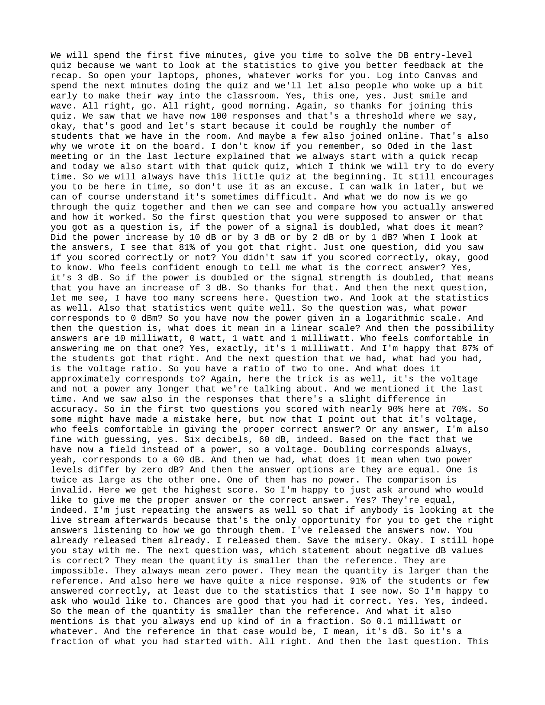
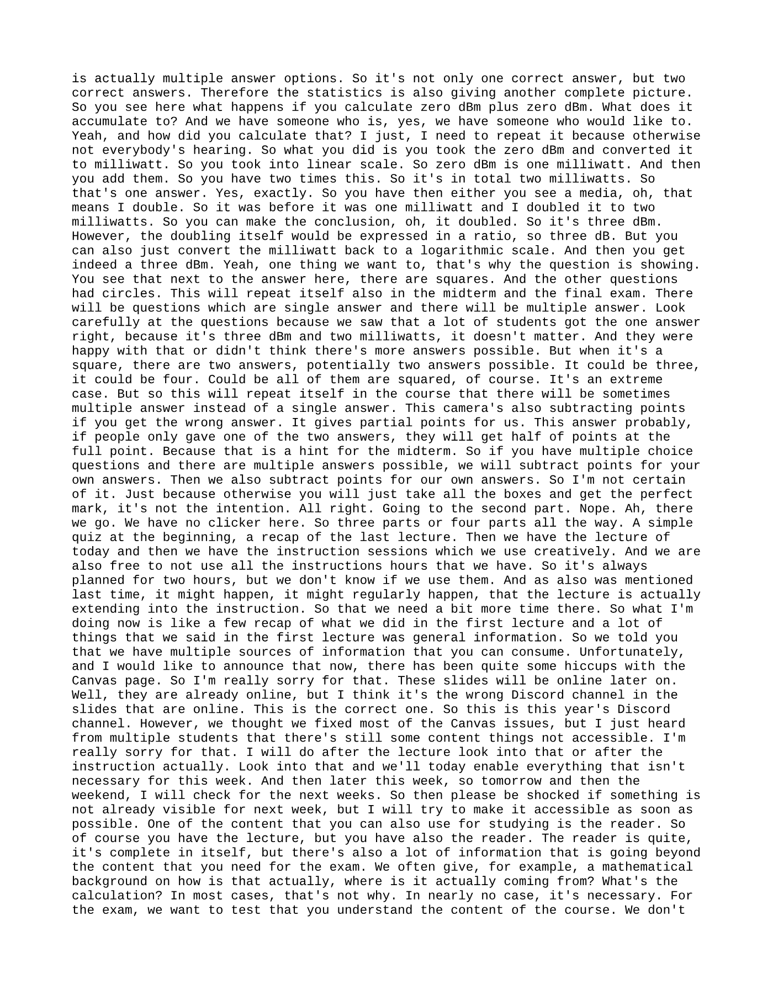
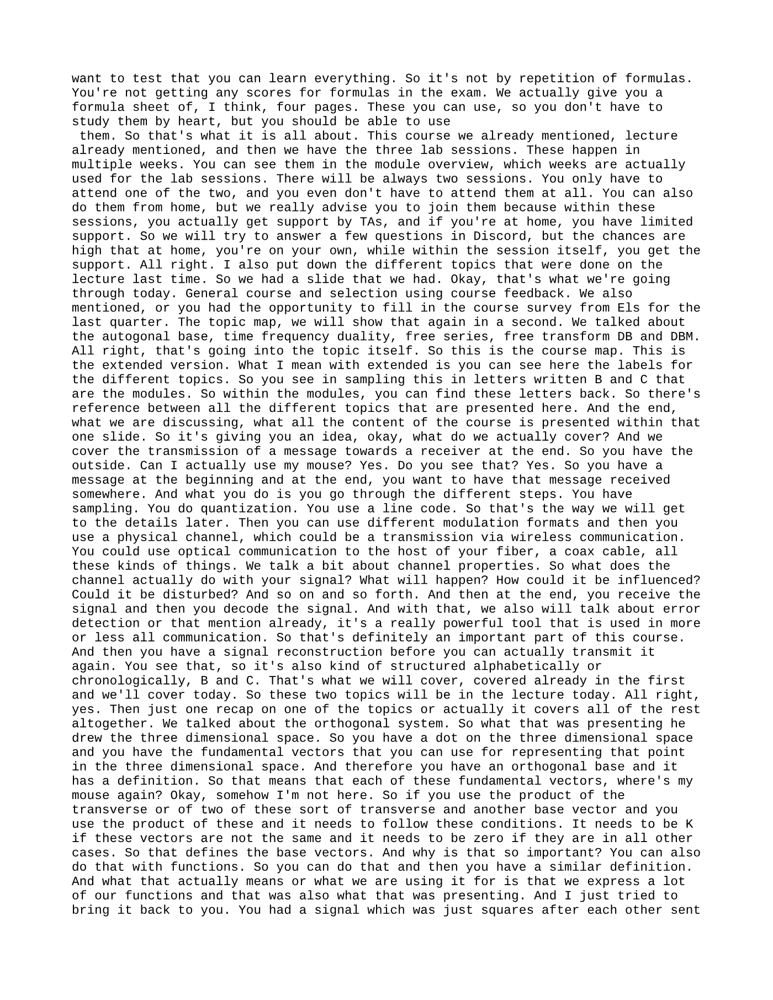
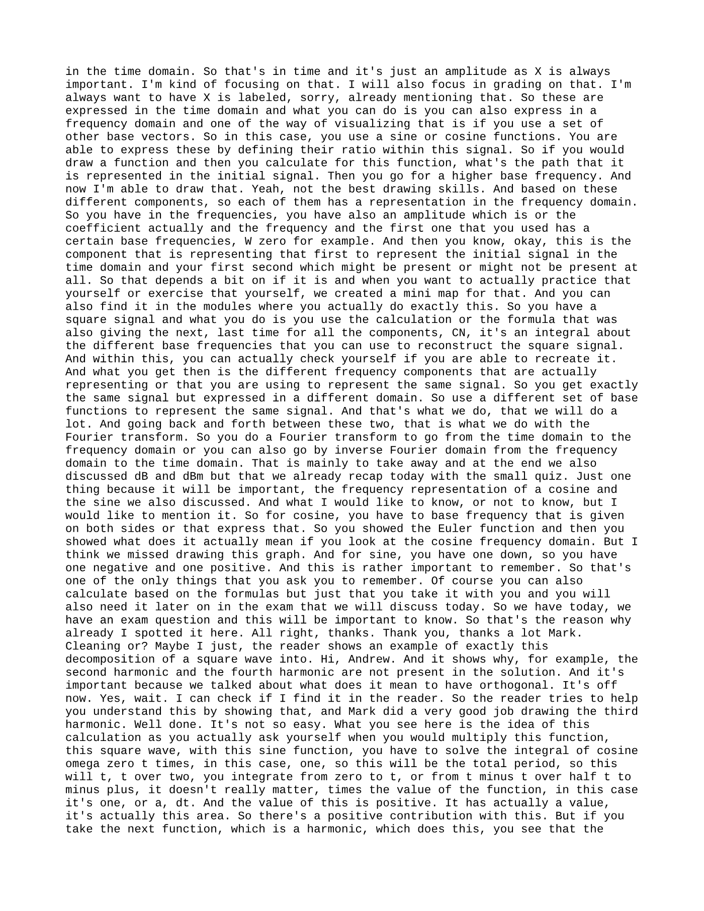
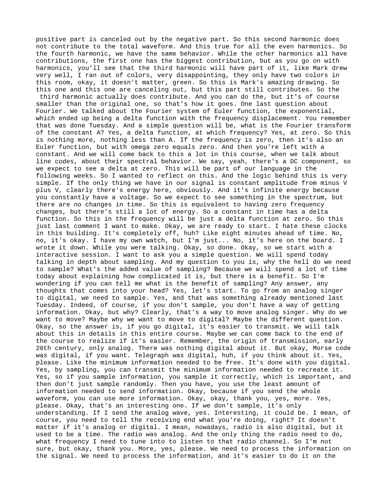
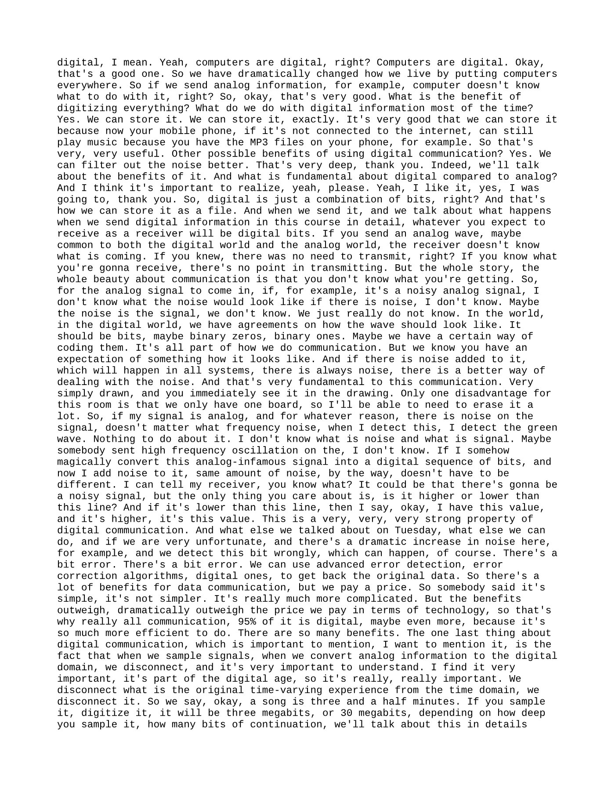
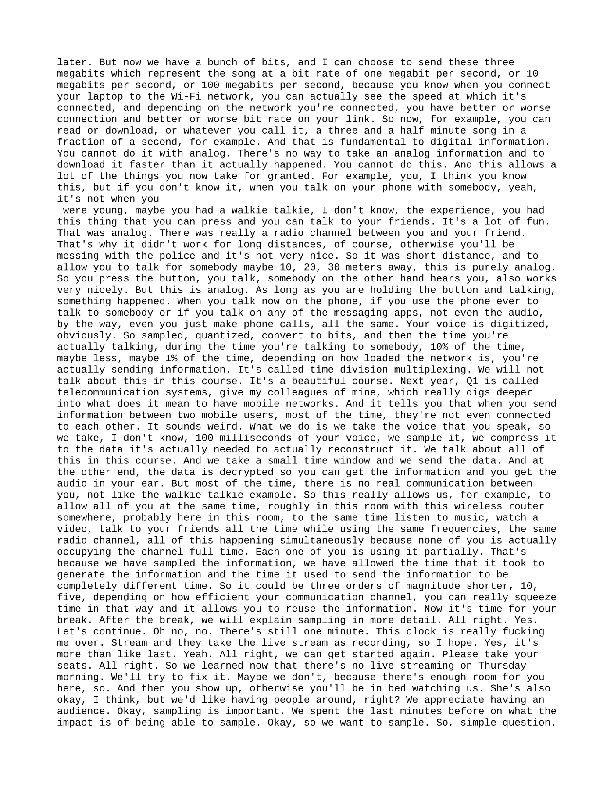
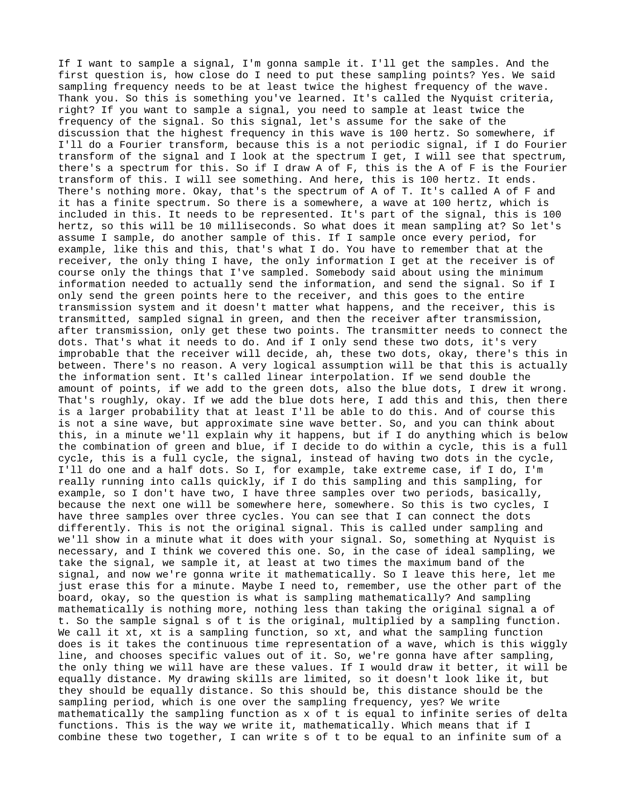
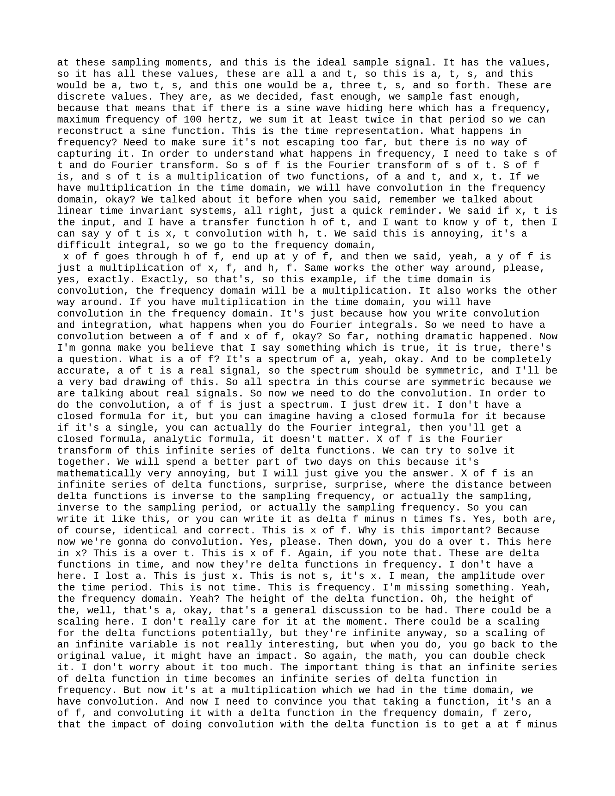
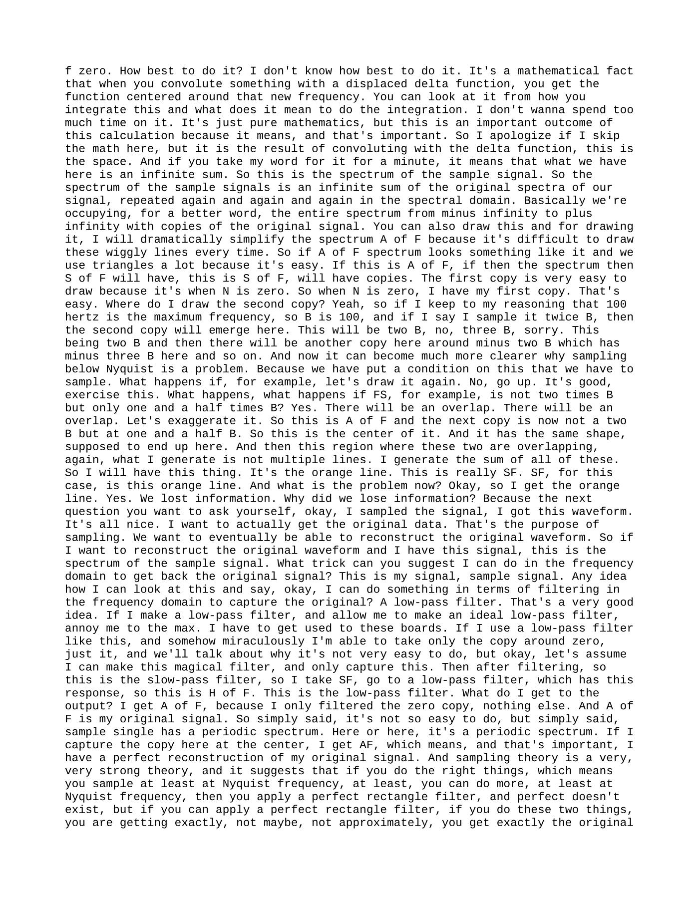
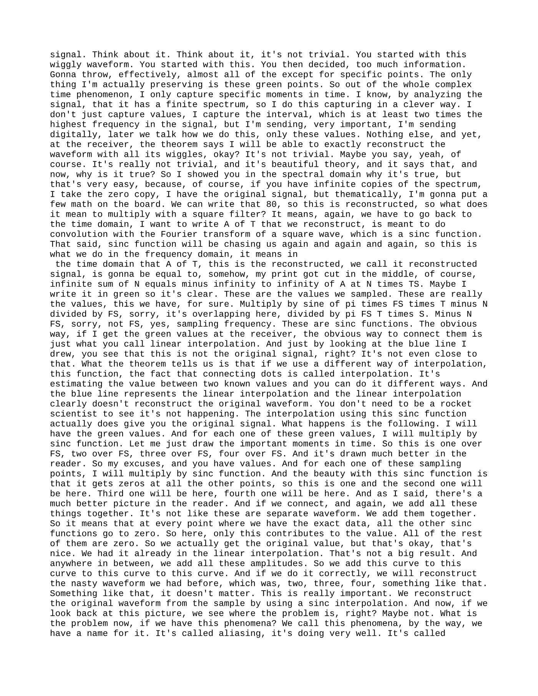
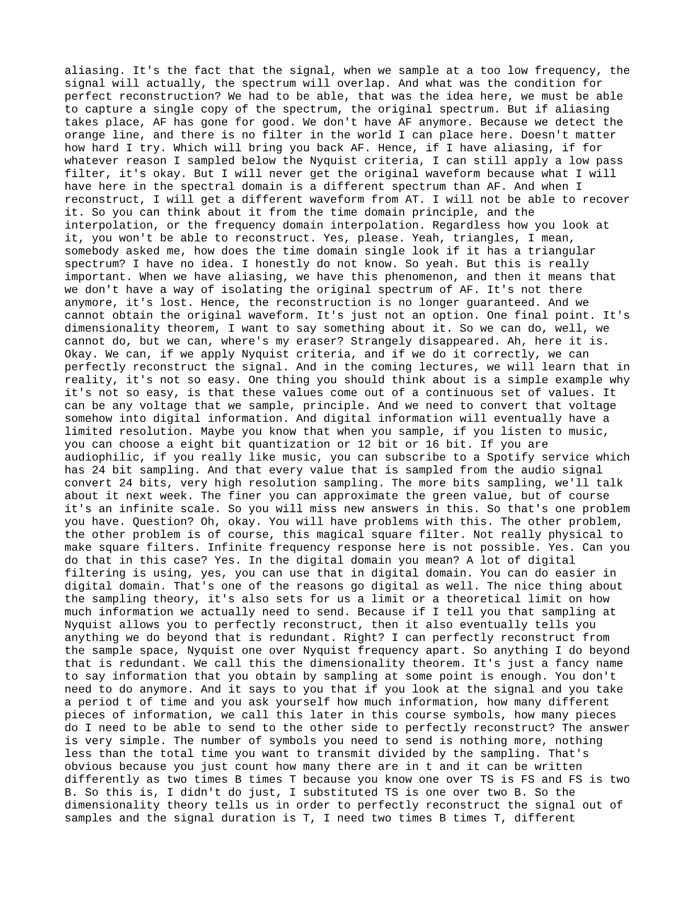
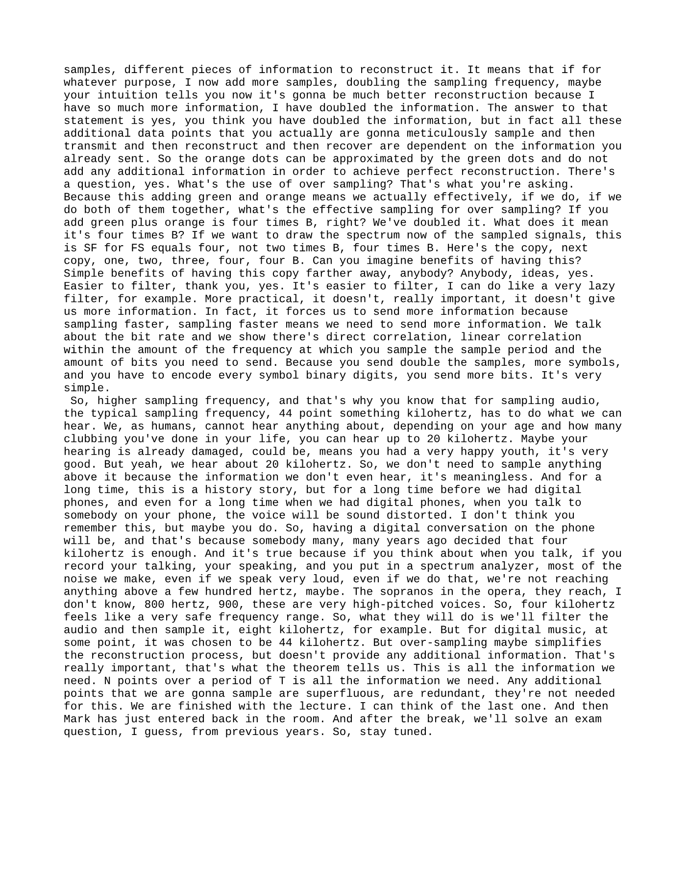